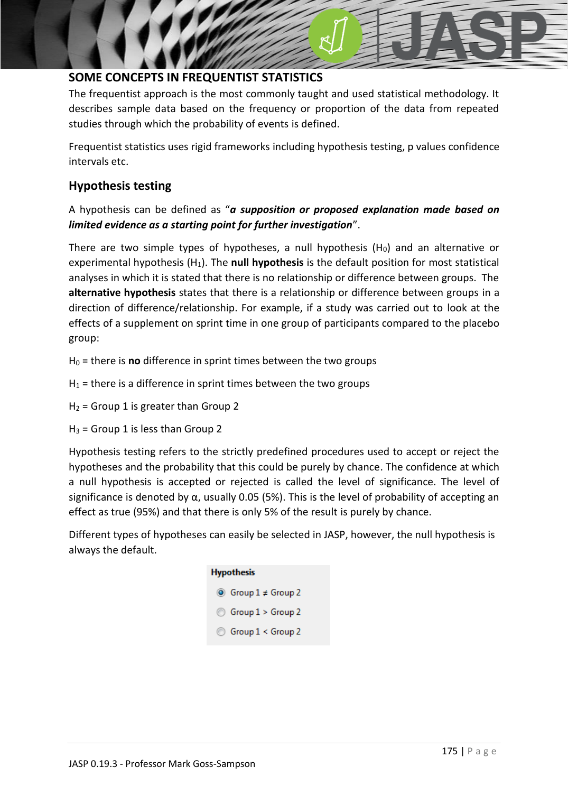

JASP_test_selection
#jasp #test_selection #flowchart #lecture
我該用哪個檢定？（Decision Flowcharts）
JASP_lecture ←→ JASP_parametric_nonparametric JASP_data_handling JASP_normality_test
對應統計概念
nonparametric
流程圖：先問三件事
- 資料型態：continuous / ordinal / nominal
- 比較或關聯：差異 / 關聯 / 預測
- 是否符合母數假設：常態 + 變異同質

1. 一樣本 vs 已知母體
| 資料 |
檢定 |
note |
| Continuous |
One-sample t-test |
JASP_one_sample_ttest |
| Ordinal |
One-sample median test |
（目前 JASP 未提供） |
| Nominal 2 類 |
Binomial test |
JASP_binomial_test |
| Nominal > 2 類 |
Multinomial / $\chi^{2}$ goodness-of-fit |
JASP_multinomial_test JASP_chisquare_goodness_of_fit |
2. 變數關聯
| 資料 |
母數假設 OK |
違反假設 |
| Continuous |
Pearson |
Spearman / Kendall |
| Ordinal |
Spearman / Kendall |
— |
| Nominal |
Chi-square contingency |
— |
→ JASP_correlation JASP_nonparametric_correlation JASP_chisquare_association
3. 預測結果（迴歸）
| 應變 |
預測變數數 |
檢定 |
| Continuous |
1 |
Simple regression |
| Continuous |
≥ 2 |
Multiple regression |
| Ordinal |
任意 |
Ordinal regression（JASP 未提供） |
| Nominal |
任意 |
Logistic regression |
→ JASP_simple_regression JASP_multiple_regression JASP_logistic_regression
4. 兩獨立組差異
| 資料 |
母數 OK |
違反 |
| Continuous |
Independent t-test |
Mann-Whitney U |
| Ordinal |
— |
Mann-Whitney U |
| Nominal |
— |
Chi-square / Fisher's exact |
5. 兩相關組差異
| 資料 |
母數 OK |
違反 |
| Continuous |
Paired samples t-test |
Wilcoxon |
| Ordinal |
— |
Wilcoxon |
| Nominal |
— |
McNemar's（JASP 未提供） |
6. ≥ 3 獨立組差異
| 資料 |
母數 OK |
違反 |
| Continuous |
One-way ANOVA |
Kruskal-Wallis |
| Ordinal |
— |
Kruskal-Wallis |
| Nominal |
— |
Chi-square contingency |
7. ≥ 3 重複組差異
| 資料 |
母數 OK |
違反 |
| Continuous |
RMANOVA |
Friedman |
| Ordinal |
— |
Friedman |
| Nominal |
— |
Repeated measures logistic regression |
8. 兩個以上自變數的互動
| 資料 |
母數 OK |
違反 |
| Continuous |
Two-way ANOVA / Mixed factor ANOVA |
— |
| Ordinal |
— |
Ordered logistic regression |
| Nominal |
— |
Factorial logistic regression |
→ JASP_twoway_independent_ANOVA JASP_twoway_repeated_ANOVA JASP_mixed_factor_ANOVA
延伸
- 母數 vs 無母數：JASP_parametric_nonparametric
- 變數型態：JASP_data_handling
- 概念詳解：social_science_statistics_book 各章